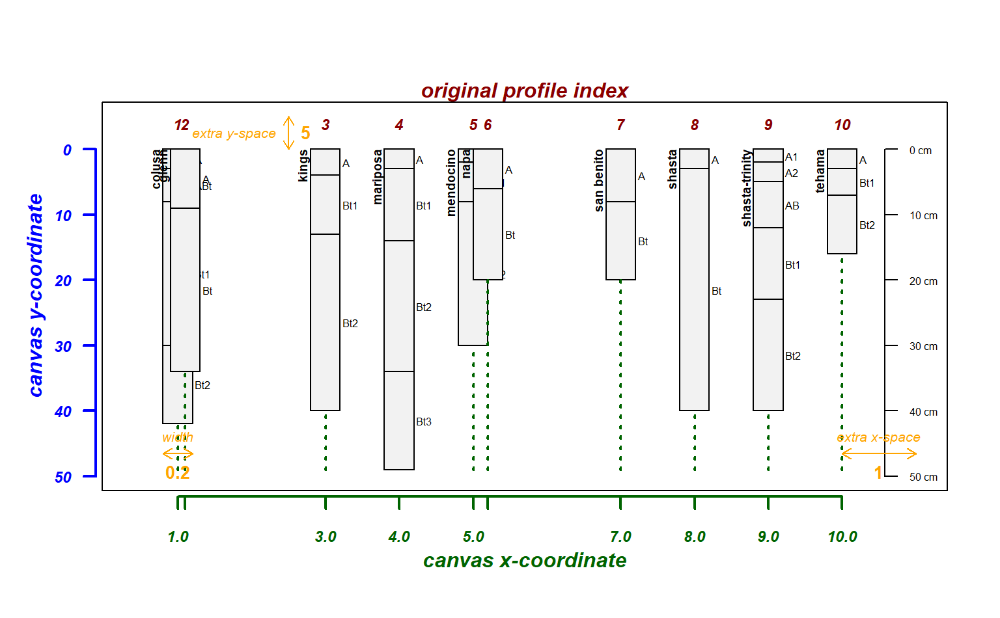
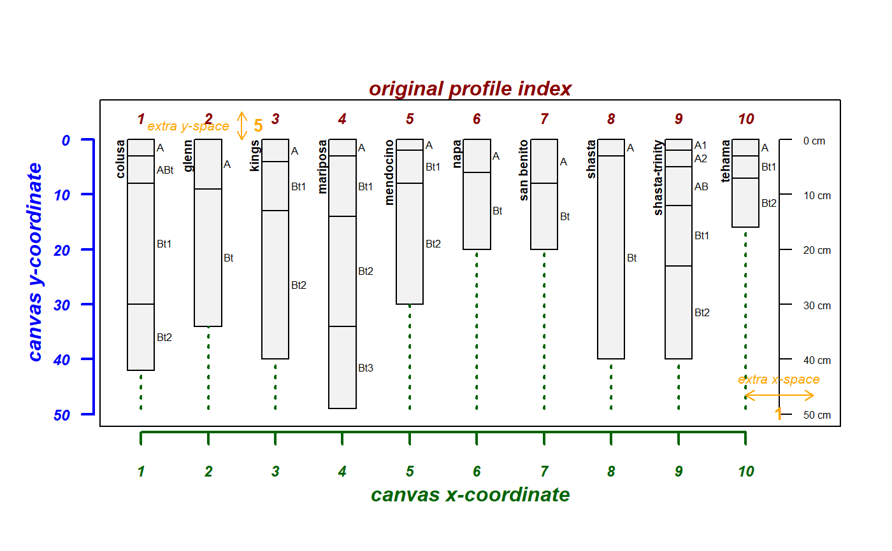
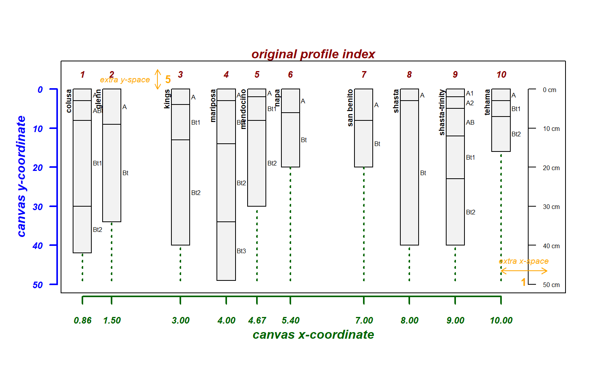
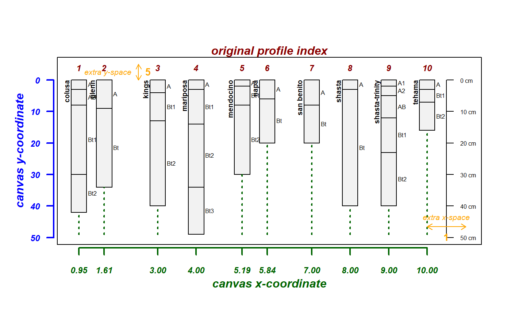
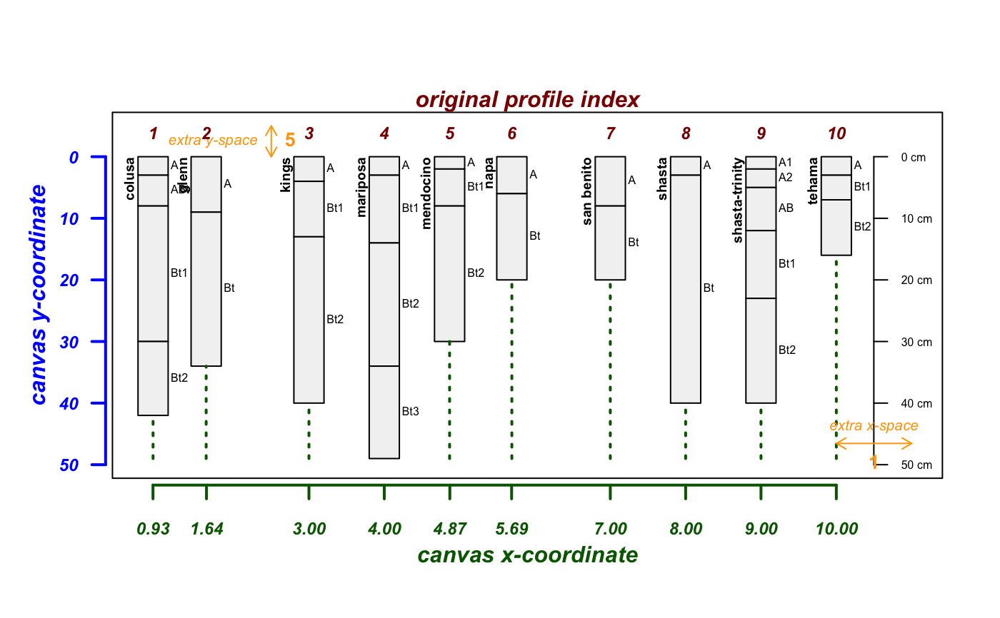
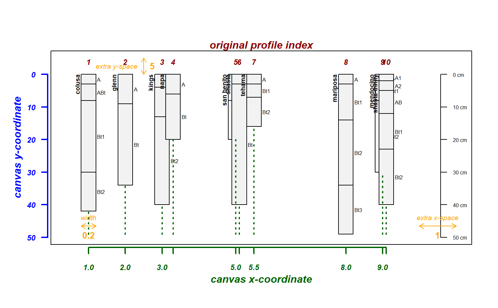
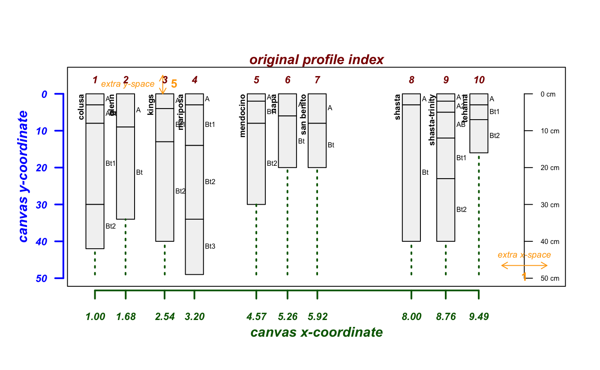
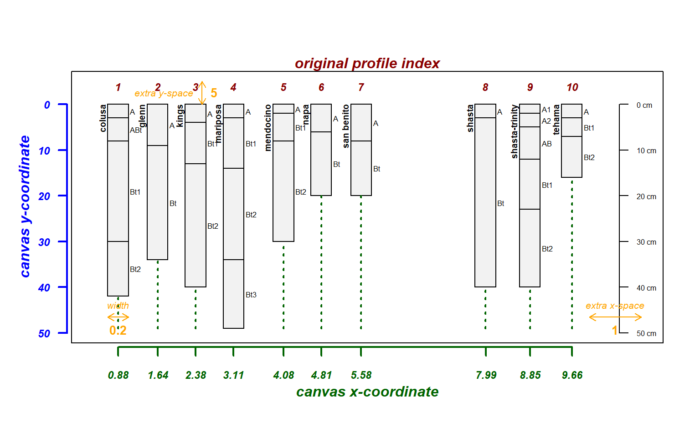
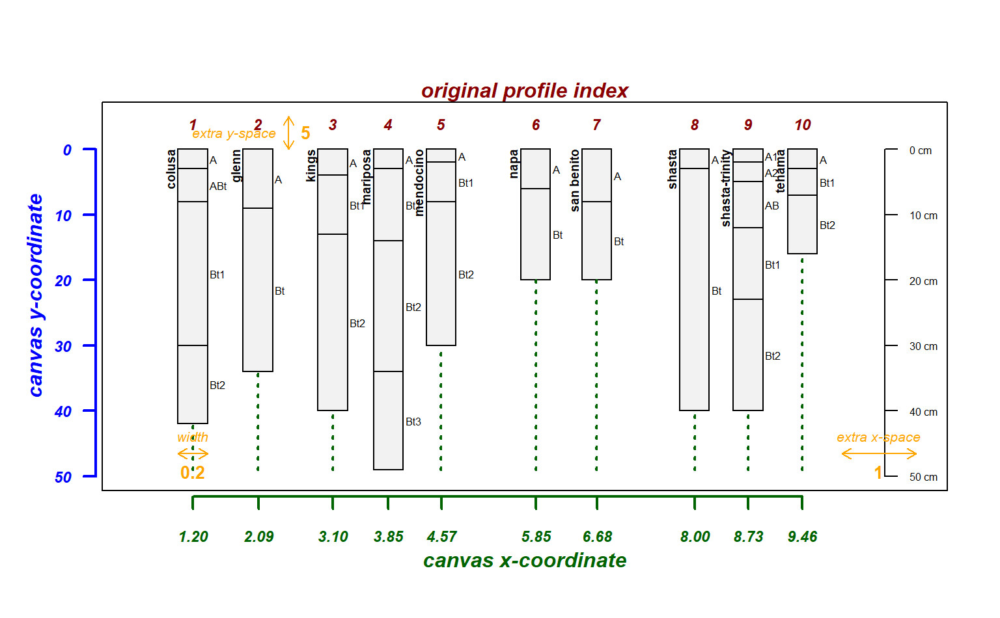
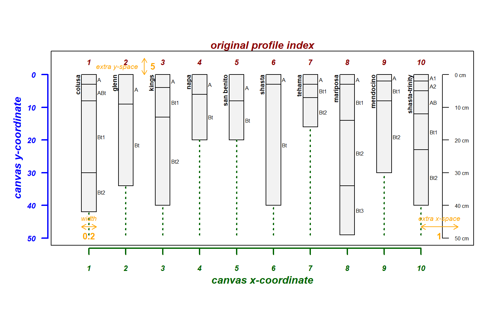

fixOverlap.RdThis is a very simple optimization algorithm for adjusting horizontal sketch positions until affected profiles are farter apart than a given threshold. Rank-ordering and boundary conditions are enforced on the adjustments. Failure to converge within maxIter results in an integer sequence.
fixOverlap(x, thresh = 0.6, adj = 0.2, min.x = 0.8, max.x = length(x) + 0.2, maxIter = 1000, trace = FALSE)
| x | vector of relative horizontal positions, one for each profile |
|---|---|
| thresh | horizontal threshold defining "overlap", must be < 1, ideal values likely in [0.3, 0.8] |
| adj | adjustments are tested within |
| min.x | left-side boundary condition |
| max.x | right-side boundary condition |
| maxIter | maximum number of iterations to attempt before giving up and returning integer sequence |
| trace | print diagnostics |
a vector of the same length as x, preserving rank-ordering and boundary conditions.
This is a very naeve function and may fail to converge on a reasonable solution. SANN would be a much more robust framework.
# sample data data(sp4) depths(sp4) <- id ~ top + bottom # proposed vector of relative positions, overlap likely pos <- c(1, 1.1, 3, 4, 5, 5.2, 7, 8, 9, 10) # try it explainPlotSPC(sp4, name='name', relative.pos=pos)# attempt to fix using an integer sequence, short-circut will prevent adjustments explainPlotSPC(sp4, name='name', relative.pos=fixOverlap(1:10, trace=TRUE))#># attempt to adjust using defaults explainPlotSPC(sp4, name='name', relative.pos=fixOverlap(pos, trace=TRUE))#># attempt to adjust and tinker with defaults explainPlotSPC(sp4, name='name', relative.pos=fixOverlap(pos, adj = 0.2, trace=TRUE))#># repeatable adjustments set.seed(10101) explainPlotSPC(sp4, name='name', relative.pos=fixOverlap(pos, thresh = 0.7, trace=TRUE))#># more complex adjustments required pos <- c(1, 2, 3, 3.3, 5, 5.1, 5.5, 8, 9, 9.1) # tinker explainPlotSPC(sp4, name='name', relative.pos=pos)#>#>#># no solution possible given these constraints explainPlotSPC(sp4, name='name', relative.pos=fixOverlap(pos, thres=1, adj = 0.2, trace=TRUE))#>